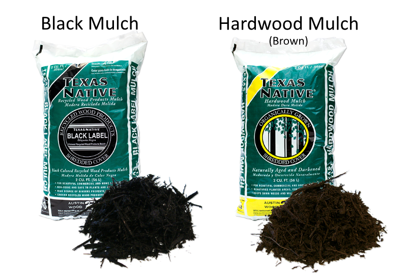
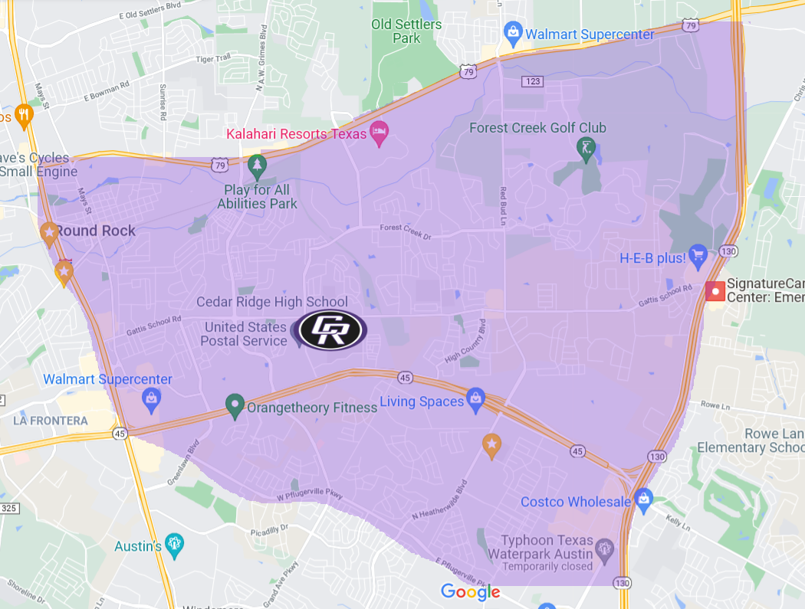

Mulch and Donation Drive
High quality mulch in 2 cubic feet bags, available in two different colors. A 2 cubic feet bag covers 12 square feet at 2 inch depth, perfect for use in vegetable gardens, flowerbeds and around trees.
March 26th - Pickup or Delivery
On Saturday, March 26th, we'll be rolling out the mulch! You can have it delivered to your home or business, or pickup at Cedar Ridge High School and we'll load into your vehicle. Minimum order for delivery is $35 and this can be a combination of mulch and/or donation. Delivery area is the Cedar Ridge Attendance Zone, which is roughly the area South of 79, East of 35, West of 130, and North of Pflugerville Pkwy.
You can purchase mulch, donate cash, or both
Don't need mulch because you aren't local? Choose "No Mulch, I'll be making a donation". If you need just a few bags and want it delivered, you can add on a donation to exceed the delivery minimum of $35.
Thank you for your support!
Whether you are a friend, family member, co-worker, or alumni of the program, the 220 member Cedar Ridge Raider Band and Color Guard cannot exist and compete at this level without your support. All proceeds go toward supporting operating expenses of the band which include purchasing our show music, show design, props, transportation, uniforms, and meals. We are also funding a new semi-trailer later this year for transporting our equipment. Thank you for your generosity and support!